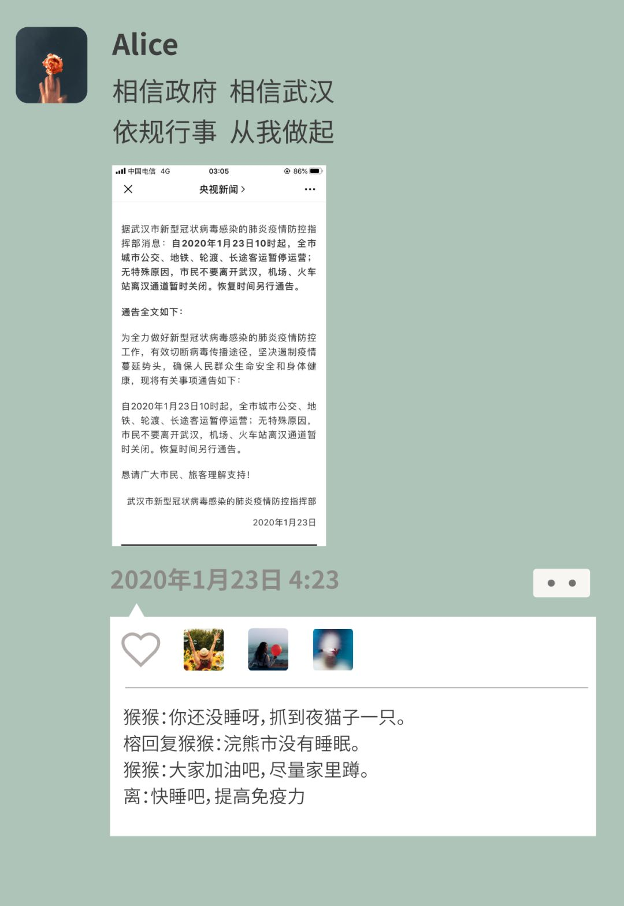
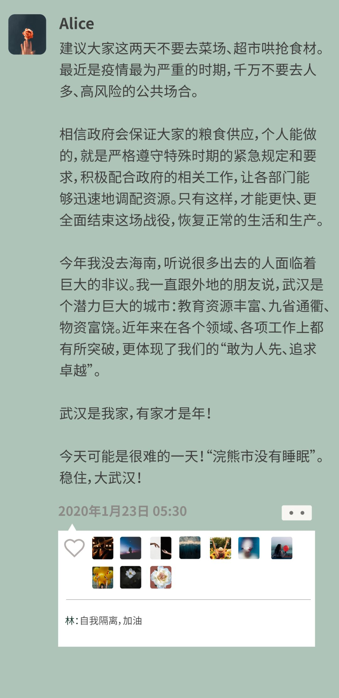
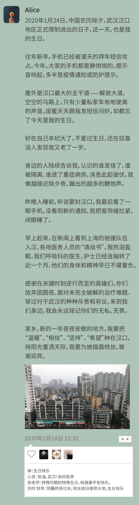
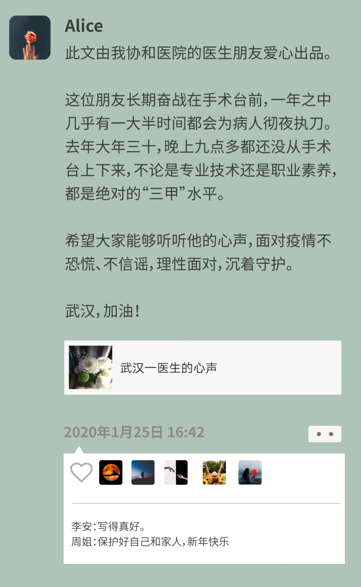
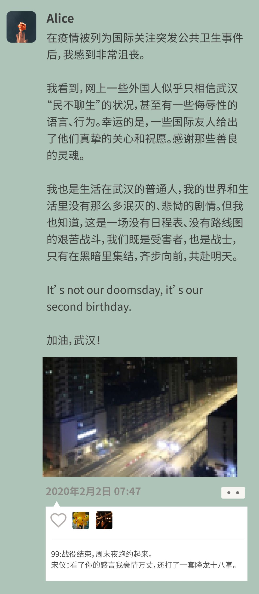
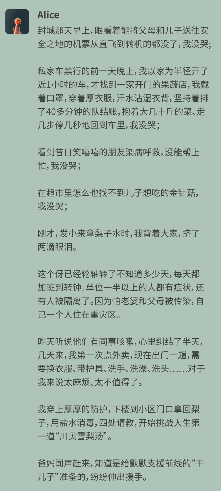
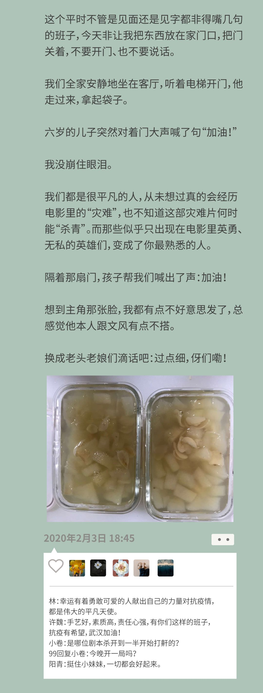

“湖北人，离我远点！”丨特别报道
原文链接 备份链接 文/麓泉 编辑/大风 从1月23日算起，武汉宣布封城已经大概过去了半个月的时间。 一时间，湖北乃至其中的任何一个城市，都成了闻之色变的词语，与湖北有关的人成了全国各地区无差别“歧视”的对象。 封城后的武汉，图源于微博林 …
自1月23日至今，武汉封城19天。
爱丽丝（注：爱丽丝是电影《生化危机》中女主角的名字，她用这个化名，是希望武汉人能像电影中的人一样，不惧瘟疫）是武汉市汉口一家单位的职员，在武汉生活了30年。封城之际，她选择和父母、孩子一起留在家乡，18天里，她独自开车采购、在家隔离、度过30岁生日，给在一线奋战的朋友熬汤助力。
作为留守武汉的普通人，她在朋友圈记录了自己有悲有喜的日常生活，也希望传达给外界一种声音：这不是武汉的末日，这是我们的第二个生日。
1

2020年元旦，我在北京上网络研究生的课程，听闻武汉爆发“不明原因肺炎”，北京的朋友劝我别回家，我还是决定回去，毕竟父母和儿子都在武汉。
我网购了医用抗菌洗手液和N95口罩，于1月5日回到武汉，街上依旧车水马龙、人声鼎沸，我感觉华南海鲜市场疫情是一则过时的小新闻。爸妈看到寄回家中的快递，数落了我一番，于是我把即将到货的N95退了，把原来的棉布口罩找出来，不过，我放弃了绿色出行，每天开车上班。
1月20日，网上疯传各种展现武汉人民“处事不惊”、“洒脱豪迈”的段子。外地来办事的朋友都很惊讶，路上熙熙攘攘的人群里只有他们戴了口罩。
作为土著，我很能理解武汉人的这种个性特征。我生活在武汉汉口，以汉口为发源地的“码头文化”将浓浓的“江湖气”植入武汉人的品性。大气、豪爽、爆裂、“装精”是武汉人民的常规配置，并且当时，我们谁也没想到会发展到如此严重。
1月21号，多年好友S医生在微信上给我发了一则短视频，应该是在他们医院的呼吸科，十几个医务人员围着一个病床，似乎是在查房。
拍视频的是病房里的另一个病患，一边拍一边用武汉话说：“情况就是这个情况，冒得么斯大不鸟滴，有几黑人撒（这没什么，哪里吓人嘛）……”。
S医生很郁闷地跟我说：“一副玩世不恭的样子，完全没当一回事”，我哈哈大笑回复他：“是的，武汉男生都这样，嘴上不晓得几狠，心里黑得像鬼（嘴巴上逞强，心里却很害怕）。”
在武汉，乐观面对的市民们比比皆是。我一度怀疑，哪怕这次面对的是生化危机，武汉也是一座欢乐的“丧尸之城”。
可惜，我们真的成了“浣熊市”（电影《生化危机》中的城市）时，也没有了欢乐。
2

1月23日凌晨2点多，我看到封城通告，急忙查询各种官方网站，最后确信这不是谣言。
我的大脑飞速运转，我留在这里不要紧，必须把爸妈和孩子送到安全的地方。
我去叫老爸，要他们起床收拾东西坐最早一班飞机去海南（我们家在海南有一套小房子），老爸说他知道封城，不去！我悻悻地回到房间，坐了很久之后，我在朋友圈转发了央视新闻的推送，写下“相信政府、相信武汉、依规行事、从我做起”。
几个朋友马上给我发微信，说着各自的担忧。在美国的猴猴留言说：还没睡呀？抓到夜猫子一只。好友榕回复：浣熊市没有睡眠。而我也确实再无法入睡，在几个家庭和好友群里留言嘱咐大家后，接着发了第三条朋友圈。
3

发完朋友圈，我网购了近600元的食物，爬起来开车去加油。不到6点的加油站，已经有不少车排队。我还在刷去海南的机票，那时候，还可以转机到海口。我差点就帮爸妈订票了。回家后，看到老爸站在客厅等我，我说我去给车加油了，让他再考虑一下去海南的事情。老爸还是拒绝了，我发了好大一通脾气。
我不知道别人是否也有这样的感受，我可以留下，我有车，我可以去前线当志愿者接送医护人员、送物资，但我想让父母和儿子安全离开。
最终，他们没有走，我也没有上前线，只能每天在朋友圈写些文字，声援。
4

2020年的除夕夜，手机收到的不是“新年快乐”的祝福，霸屏的也不是春节吐槽段子，朋友圈里疯传的是春晚历史上唯一没有彩排的疫情防控节目、各个医院的防护物资求助公告、各租赁企业拿出房屋免费支援一线人员的通知公告。
隔离的日子里，我和儿子一起读最爱的睡前童话，结尾如下：
“房间里和以前一模一样，东西都摆在原来的地方，那只陈旧的老座钟还在‘嘀嗒，嘀嗒’地走着，指针照样在指示时间。可是，等他们自己一踏进房间门后，这才发现原来自己已长大成人了。屋檐上的玫瑰盛开着，花枝从敞开的窗户伸进房来。凯伊和杰尔达各自在小凳子上坐了下来，他们手拉着手，像是做了一场可怕的噩梦，要把雪女王那座冰冰凉、空荡荡的宫殿忘个干净……
这时，夏天已经来到，暖和、美好的夏天。”
暖和、美好的夏天来临之前，一整个春节假期充斥着即时更新的确诊病例数字，各种离奇的谣言，以及人们不断积聚的恐慌。
5

自疫情开始，我和S医生不断在线上讨论。他发布这篇文章的时候，我们都没有料到后来会那么火。我一开始还开玩笑，说这么好的推文，免征他在我朋友圈的推广费。没想到后来，人民日报也免了他的推广费。
其实医生也是人，警察也是人，抗疫前线的每一个工作人员都是人，他们也会感染、也会害怕，也要吃饭、要休息、也有家。
6
在家线上K歌时，突然灵感爆发，现改了一首歌武汉版的《忽然之间》，请同样隔离在家的闺蜜小卷演绎了这首写给武汉的歌。
希望会有人明白，“一直有人守着爱，隔着云海的告白，花再开，陪你珞珈岸边再看大海”。

**7
**

我后来才知道，23号早上，很多人都出去了，但出去的人也都后悔了。
流浪异地的日子并不好过。一个闺蜜在上海工作，父母从武汉赶去上海和他们汇合，1月23号那天，他们一家人开车回山东老家看望生病的老人。路上被人举报，全家的身份信息、照片、具体到门牌的行踪都在网上的各种群里流传。有的朋友辗转一下午，报警后才找到住所。
我想说，在病毒面前，所有人都是受害者。我们封住自己的家门、独自面对病毒的侵蚀，做出如此艰难的决定，在外的同胞们却受到如此的伤害，希望越来越多的人，能 “隔离病毒，不隔离爱”。
8

还是会收到武汉人在外地被歧视的消息，在国外的武汉人，有些也受到了不公正的对待。
记得去年去美国，Uber司机说他准备去中国旅游，还想来武汉吃热干面，我当时真是感到超级骄傲。
我只是一个普普通通的武汉人。我爱我的城市，爱我的国家。我希望我的城市、我的国家能够被大家喜爱，至少是被大家尊重。
It’s not our doomsday, it’s our second birthday.这不是我们的末日，这是我们的第二个生日。
9


发小在政府部门上班，疫情爆发后，就没有休息过。年前就听说他们办公室几个同事咳嗽、发烧。来拿梨子水的那天，他提前给我打了好几个电话，再三强调把东西放在门口，把门关好，不要同他说话。
对他的记忆，永远都停留在幼时，那个屁里屁气（小气）、好吃搞笑的小男孩。今天跟我打电话时，突然严肃得像个大人。
今年突降的战疫，守护者们大多是80后、90后，网上那句话很对，“所谓的白衣天使,只不过是一群孩子换了身衣服,学着前辈的样子,和死神抢人”。
所谓英雄，也只不过是一群孩子，戴了个口罩，奔赴前线。
10
“等到那一天，热干面、豆皮、面窝、汤包、烧卖、糊汤粉、牛肉粉、鳝鱼面……随你便！”
撰文 | 爱丽丝
编辑 | 崔玉敏
版式 | 曾杏

原文链接 备份链接 文/麓泉 编辑/大风 从1月23日算起，武汉宣布封城已经大概过去了半个月的时间。 一时间，湖北乃至其中的任何一个城市，都成了闻之色变的词语，与湖北有关的人成了全国各地区无差别“歧视”的对象。 封城后的武汉，图源于微博林 …
原文链接 备份链接 《战疫口述记》，是燃财经在新型冠状病毒肺炎期间推出的特别栏目，记录疫情亲历者的观察和感受。本文为第3篇，查看前2篇请点击《农村这样防肺炎》《我在武汉战肺炎》。 作者 | 苏琦 金玙璠 孟亚娜 唐亚华 孔明明 魏佳 …
原文链接 备份链接 昨天，我们发起了征集，请身在疫区的同胞、奋战在疫情第一线上的医护人员、全国各地留守家中防疫的人们讲述这个春节发生的真实故事，在后台收到的近百份留言中，我们筛选并刊登如下，我们是倾听者，也是见证者—— 01 这个春节，是 …
原文链接 备份链接 作者 | 谈骁 (武汉诗人，春节自我隔离在潜江小镇。) 编辑：康晓 出品｜深网·腾讯小满工作室 欢迎下载腾讯新闻APP，阅读更多优质资讯 编者按：通过湖北各城普通民众的视角和抗疫日记，记录这一段我们永不会忘记的历史。封 …
原文链接 备份链接 本文故事来自一名化名为“平安”的武汉大学生，记述了她从返乡、封城，再到过年所经历的种种。这个特殊的春节，焦虑与希望同在，寂静与喧嚣并存。身处「风暴中心」，从慌乱到乐观，她的心理发生了什么样的变化？让我们一起来看看她过去 …